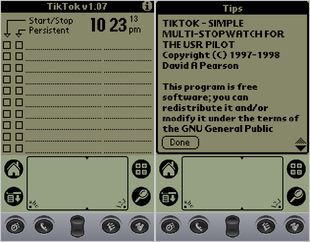
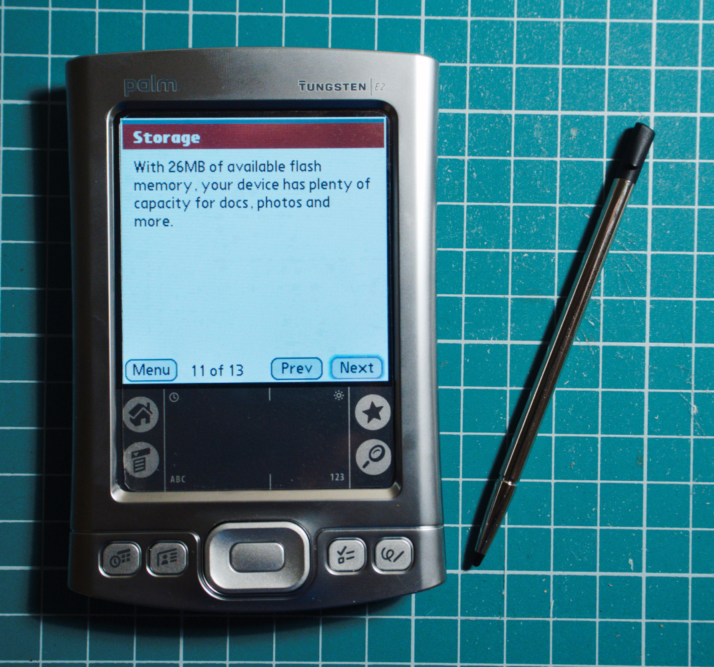
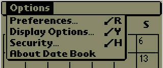
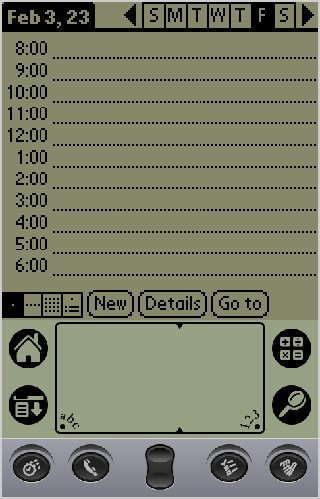

Содержание
Фам Нювен несколько лет провел, обучаясь программировать и исследовать. Программирование восходило к началу времен. Как та навозная куча за замком отца. Когда ее промыло ручьем на десять метров в глубь, обнаружились искореженные корпуса машин — летающих машин, как говорили крестьяне, еще от тех великих дней колонизации Канберры. Но та навозная куча была чистой и свежей по сравнению с тем, что лежало в локальной сети «Репризы». — Вернор Виндж: «Глубина в небе»
В
сё, как оно обычно и бывает, началось случайно. Однажды мне попалась на глаза статья про vintage computing. Оказывается, люди до сих пор успешно используют Palm’ы и всякие Apple Newton’ы по их прямому назначению — как персональные цифровые ассистенты (PDA). Тут я вспомнил свой первый опыт с вроде бы Palm IIIc. У нас в университете (ИТМО) проводились тесты на этих КПК — мы решали всякие задачи со стилусом в руках в каком-то самописном приложении. Пользоваться теми Palm’ами было приятно (а вот решать задачи по классической механике — не очень).
И тут мне пришла в голову мысль: «А почему бы не купить себе Palm и не начать использовать его как те чуваки из статьи?» Наверное, можно взять какой-нибудь старый девайс и начать там вести свои списки дел, заметки и контролировать расходы на покушац, благо Palm вроде как специально заточен для подобных вещей. На PC я использую для всего вышеперечисленного Org Mode, но постоянно таскать с собой ноутбук неудобно, а единственное приложение на телефоне, которое понимает таблицы с формулами из Org Mode — это Emacs. А работать с Emacs на сенсорной клавиатуре — прямой путь к умножению страданий и скорби в этом мире.
Я думал, что скорее всего можно будет найти или написать программу, которая будет работать с org-файлами и на Palm’ах. Спойлер: ничего подобного найти не удалось, видимо потому что Org Mode был придуман тогда, когда эра этих КПК уже подходила к концу. Пришлось закапываться в археологическое программирование, чтобы научить Palm понимать мои хитровыделанные таблицы с формулами, часть из которых написана на Emacs Lisp’е.
Где сейчас можно купить девайс с PalmOS на борту?
К
счастью, сами Palm’ы ещё не являются бесценными музейными реликвиями и их до сих пор можно найти на разных сайтах с объявлениями. К Интернету эти устройства не так уж и просто подключить, встроенный браузер больше не работает с современными сайтами, новых приложений для них больше не пишут, а TikTok для PalmOS (v3.5) выглядит вот так:
Поэтому стоят они не так уж и много и за 3-4 тысячи рублей можно отыскать новый КПК, на котором даже муха не сидела.
Мне повезло найти абсолютно новый Palm Tungsten E2 в запаянной коробке из закромов какой-то московской фирмы:
Содержимое коробки
От времени пострадал только клей на подсказках с росчерками Graffiti 2, да аккумулятор — он полностью сел за 16 лет лежания в коробке. К счастью, менять его не потребовалось — 15 минут на зарядке и устройство ожило:
Использовать, да и просто держать этот Palm в руке невообразимо приятно — строгий и небольшой металлический корпус, не вызывающий ассоциаций с куском мыла, по своему прекрасен. У металлического же стилуса чувствуется небольшой вес, когда берёшь его в руку — подозреваю, что он цельнолитой, а не полый. Так и хочется постоянно доставать его, чтобы просто подержать в руках. Единственный минус — пластмассовая защелка для крепления стилуса в корпусе — мне кажется, что через несколько лет она сотрётся и стилус начнёт выпадать.
Если сами Palm’ы пока ещё можно отыскать, то с расходниками или запасными частями для них всё гораздо сложнее (тут надо учитывать, что поскольку я имею российское гражданство — мне недоступен ни Amazon, ни eBay, ни PalmDR). Потратив пару недель я не смог найти крэдл и запасные стилусы. Не говорю уже о красивом металлическом чехле.
Цифровое наследие Palm OS
П
оигравшись с купленным устройством я нашёл много интересных вещей, которые увы не дожили до наших дней в масс-маркете:
Аскетичная операционная система из коробки — без лишнего мусора от вендора, вроде неудаляемых без переподвыверта приложений для «очистки» памяти, социальных сетей, «левых» магазинов с ПО и так далее.
Долгая работать от аккумулятора — с первой же зарядки мой Palm прожил N дней!
Рукописный ввод текста стилусом. Мои страдания при использовании виртуальной сенсорной клавиатуры на современных Android’ах невозможно описать. Не помогает ни свайп, ни автодополнение с исправлением ошибок — семь потов сойдёт пока напечатаешь хотя бы пару абзацев без опечаток, со всеми нужными знаками препинания! А всё потому, что мышечная память при печати на сенсорном экране не используется. Если во времена Siemens M55 я мог вслепую нащупать тактильную пупырку на кнопке 5 jkl и спокойно напечатать хоть «Войну и мир», то сейчас проще подключить внешнюю Bluetooth-клавиатуру к смартфону, во избежание невосполнимой траты нервных клеток и последующего разбивания телефона о стену (поэтому он у меня ударопрочный).
Стандартные приложения заботятся о минимизации пользовательского ввода. Eсли в главном окне начать писать что-то стилусом — приложение подхватит ввод и сделает с ним что-нибудь разумное. Список дел — сохранит текст в новой заметке. Календарь — использует написанные цифры как время для нового события. И так далее.
Есть хоткеи. Работают они по тому же принципу, что и на PC — только вместо комбинации клавиш у нас специальный росчерк и буква:
Четыре аппаратных кнопки для запуска программ. При этом запущенная программа обрабатывает повторное нажатие на кнопку. Так, в календаре у нас меняется вид календаря. В списке дел — происходит переключение между общим списком, делами за последние 7 дней и пропущенными делами.
В эмуляторе Palm OS 3.5 это выглядит примерно вот так:

Минусы у Palm’а тоже были — в основном связанные с древностью устройства — нет ни поддержки современных протоколов передачи данных, ни поддержки современных форматов файлов (например, docx или xlsx). Но show stopper’ами для меня стали следующие вещи.
Tungsten E2 «из коробки» не работает с SD-картами больше 1 Gb. У меня была карточка на 2 Gb родом из 2008 года — и она не распознавалась устройством. К счастью, для этой проблемы я нашёл простое решение.
Вторая проблема была связана со временем. В PalmOS 5.4.7 Garnet поддерживаются даты лишь до 31 декабря 2031 года — в календаре нет ничего после этой даты.
В эмуляторе с PalmOS 3.5 — та же проблема.
Из объяснения на Reddit’е: время в Palm OS сохраняется как 32-bit unsigned integer и отсчёт ведётся примерно с начала XX века (возможно, из-за необходимости сохранять даты дней рождений для прабабушек/прадедушек?). И в 2031 году счётчик переполняется — поэтому 2032 года для PalmOS просто не существует. Несмотря на обилие всяких хаков для системы — решения этой проблемы с датой почему-то до сих пор нет.
ПО для Palm’ы
П
рограммы, игры и хаки, написанные для Palm OS не канули в Лету — благодаря усилиям энтузиастов, которые стремятся сохранить это цифровое наследие для истории. Если бы не они, то эта статья уже закончилась бы. А сами Palm’ы были бы не более чем бесполезными кусками пластика и текстолита, которые можно разве что поставить на полку в музее. Либо использовать в качестве донора деталей для очередного хобби-проекта на Arduino/RaspberryPi.
Тем не менее, я рекомендую не надеяться на энтузиастов и сохранять всё найденное на жёсткий диск, потому что совершенно неясно как долго архивы с программным обеспечением будут в онлайне.
Вот небольшой список архивов с ПО, живых на момент написания статьи:
- https://palmdb.net/ — целое сообщество, ставящее целью сохранить всё, что относится к Palm, для истории. Тут есть как сами программы, так и образы дисков, среды разработки, архивы сайтов и так далее.
- http://freeware.palmclub.nl/
- https://archive.org/details/softwarelibrary_palm. В этом архиве есть необычная и удобная вещь — на странице каждой программы имеется встроенный эмулятор, который позволяет поработать с программой в браузере прежде чем её устанавливать. Некоторые скриншоты из этой статьи сделаны именно в этом эмуляторе.
- http://hpc.ru/soft/index.phtml?pl167=on
- http://palmarchive.com/files/
- http://www.pda-archives.com/pilot.shtml
Установка программ в Palm проста и сложна одновременно. Саму программу достаточно скачать с одного из архивов выше — она представляет собой просто PRC файл. А вот затем надо каким-то образом доставить этот файл в память Palm’а.
В поисках решения я дошёл до статьи «Palm OS Desktop HOWTO» аж за 2002 год. Это может показаться удивительным для нашего постоянно меняющегося мира IT, но решение оттуда работает и 20 лет спустя! Для установки программы всего то был нужен набор утилит под названием pilot-link. Ссылка на сайт разработчика pilot-link естественно уже мертва, но к счастью, добрый человек выложил исходные коды на GitHub. Там же, другой хороший человек оставил ссылку на патчи от ментейнеров Gentoo.
Как пользователь этого дистрибутива — я просто установил следующий пакет и всё заработало:
* app-pda/pilot-link
Latest version available: 0.12.5-r4
Latest version installed: 0.12.5-r4
Size of files: 1,551 KiB
Homepage: https://github.com/jichu4n/pilot-link
Description: Suite of tools for moving data between a Palm device and a desktop
License: || ( GPL-2 LGPL-2 )
Пользователям других дистрибутивов видимо придётся скачивать исходные коды и собирать их вручную. Несмотря на то, что последний раз в том репозитории что-то меняли 7 лет назад — всё до сих пор спокойно собирается современным gcc.
А теперь можно переходить к установке скачанного PRC-файла в КПК. Не волнуйтесь — это проще чем установить APK-файл на Android через adb. Нужно подключить Palm к компьютеру кабелем и нажать на кнопку синхронизации. После этого достаточно выполнить команду:
% pilot-xfer -p /dev/ttyUSB1 -i ./your-program.prc
И всё — ваш Palm сначала издаст музыкальные звуки, похожие на озвучку работы компьютеров в 80-е, и программа будет установлена.
Небольшое пояснение: после нажатия на кнопку синхронизации запускается программа HotSync на Palm’е и на стороне Linux’а создаются два символьных устройства: /dev/ttyUSB0 и /dev/ttyUSB1. Для установки ПО используется второе устройство.
Решение проблемы с SD-картами
Р
ешать проблемы, связанные с Palm OS, сложно. Многих сайтов давно уже нет в онлайне, многие статьи полны ссылок, ведущих в никуда. Очень спасает сообщество r/Palm на Реддите.
Помогло оно и в этот раз. Поиск в сообществе вывел меня на комментарий, где человек описывал ту же проблему с SD-картами, что и у меня. Он привёл ссылку на статью о «новом» драйвере для Palm OS 5.x за авторством небезызвестного в узких кругах Palm’оводов Dmitry Grinberg, в котором была реализована поддержка файловой системы FAT32. Ссылка на сайт PalmPowerups с драйвером естественно была мертва, как и сам сайт. Вообще, когда дело касается Palm надо привыкать к мёртвым ссылкам.
К счастью, в статье упоминалось, что файл с драйвером называется FAT32-loader-final.prc. Непродолжительный поиск привёл вот на эту страницу, где был и нужный мне файл, и стороннее приложение, добавляющее поддержку карт стандарта SDHC и SDXC.
Драйвер был немедленно установлен и теперь вставленная карта распознавалась устройством. Но при каждой вставке карты на экране показывалась непонятная ошибка: «The startup application from this card cannot be run». К счастью, всё то же сообщество r/Palm помогло мне и с этой проблемой. Поиск привёл меня к следующему комментарию от u/user5518:
Yes, your Clié can this by default. Copy your .prc and .pdb files on the Memory Stick in the folder "*Palm/Launcher*" directory. (Should be created automatically when you format the stick in the Clié.) Then you can open the applications from the MS on your NR70/v.
Тут описывается как «научить» Sony Clie запускать PRC-файлы с карты.
Я предположил, что операционная система ожидает на SD-карте определённую структуру каталогов. А при виде пустой карточки Palm «теряется» и выдаёт ошибку. В сети не нашлось никакой информации о том, какие каталоги должны быть на SD-карте, как и самих образов карточек, чтобы можно было посмотреть как там сделано. Ради теста создал на карточке пустые каталоги, которые упоминал u/user5518:
./
└── Palm/
└── Launcher/
2 directories, 0 files
И ошибка после вставки SD-карты в Palm Tungsten E2 — пропала!
П
одытоживая — пользоваться этим динозавром по прежнему можно. В сети есть как множество архивов с ПО, поддерживаемых энтузиастами. Так и множество энтузиастов, которые могут помочь с проблемой. Не стоит сбрасывать со счетов и старые сайты со старым ПО — хоть там половина ссылок и не работает, крупицы информации из статей всё ещё могут помочь или хотя бы натолкнуть на нужное решение.
Ретропрограммирование
Низкоуровневое программирование
Java и Palm OS 5
Хоть это и не видно из написанного выше, но на самом деле я обычный Java-программист, кофехлёб, 100kk SingletonFactoryGeneratorDecorator в наносекунду. Поэтому, программа для работы с моими org-файлами будет писаться на Java.
- IT
- 29 January 2023 (Sun)